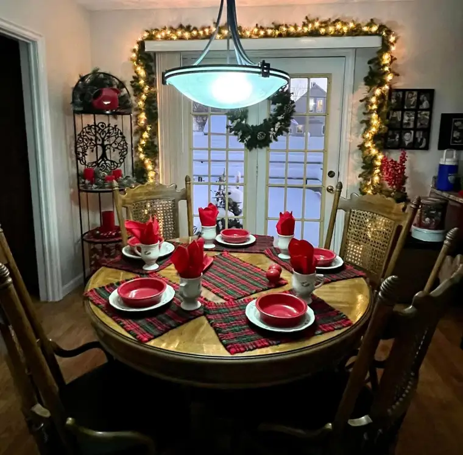
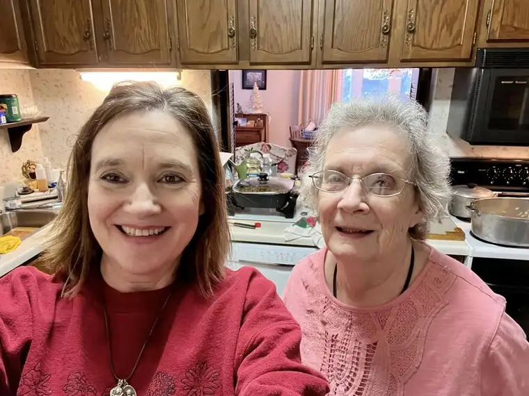
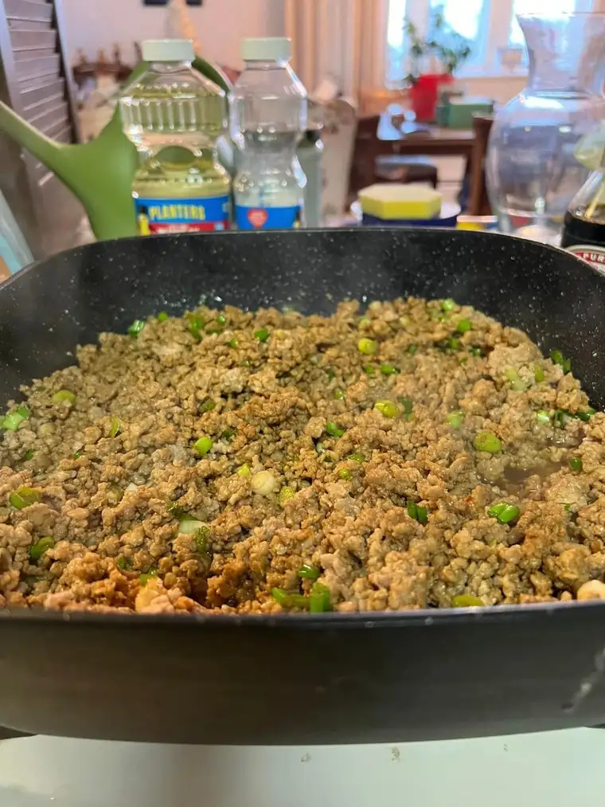
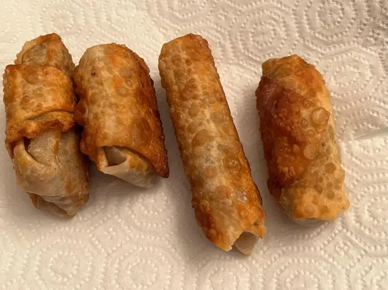
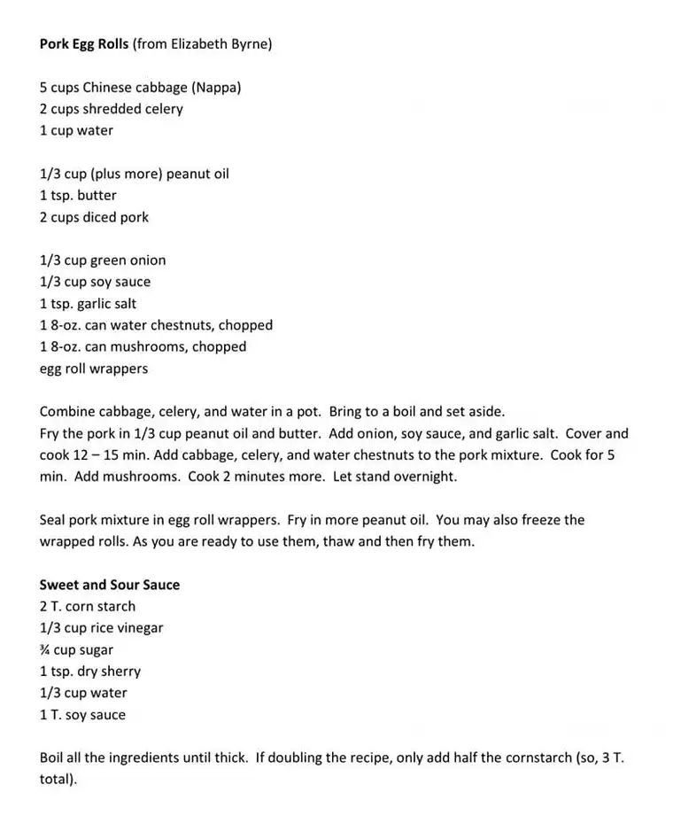
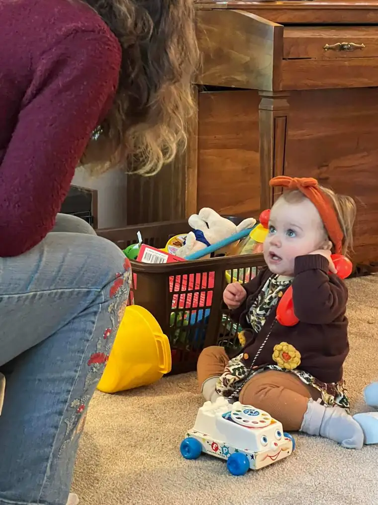
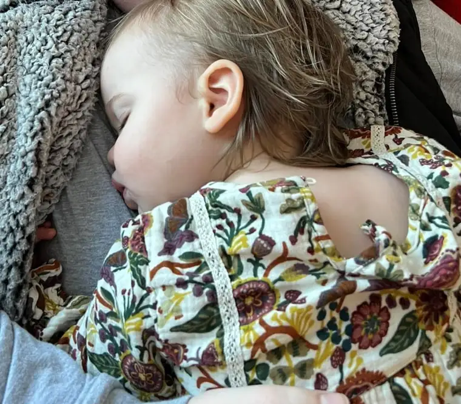

This is year 15 of my “One Word” post! That seems significant. I started doing this annual reflection/prediction in 2008 with several other blogging and writing friends to begin the new year; Mary and Vicky, to be exact. Vicky is no longer with us, yet I can’t not think of her as I ponder over the year’s new word. She inspired me to make the most of this choice, and so I compose this year’s post as a memorial to my sweet and cherished friend. Additionally, Mary is especially in my heart as she just experienced the passing of her father; a loss I understand well. I am grateful to call to mind both of these friends as I proceed with my word.
To explain briefly, the new year’s word always “arrives” as the current year is about to end. It is both a reflect back, and a gaze ahead. My previous years’ words have been: 2008, Awaken (2008); Healing (2009); Transition (2010); Pursue (2011); Ready (2012); Joy (2013); Expectation (2014); Receive (2015) ; Trust (2016); Hope and Health (2017); Alive (2018); Wisdom (2019); Family (2020); Light (2021)!; Presence (2022); and for 2023, I have chosen the word: Rest!
I needed to qualify this word, lest anyone think I intend to excuse sloth in the coming year. Not at all! The “rest” of which I am speaking came to me during prayer; a word seemingly coming from God, calling me to greater restfulness in HIM. As I pondered this, I felt such a warm serenity come over me, and it seemed my word had been chosen; though this time, not by me, but one much wiser. For that reason alone, I suspect it’s going to be more efficacious than ever.
I don’t always review how well the previous year’s word went, but it seems fitting to do so. For it is what I know, while the new year has yet to happen. It is still speculation. So, how did I fare with being present in 2022?
The past week brought presence to the fore. This year was our year to spend Christmas with my husband’s side of the family. And we had an enjoyable and blessed Christmas in Minnesota with my in-laws.

Troy’s mom always makes us feel welcomed by her special touches. Both she and Troy’s dad are present to us, and make explicit that our presence matters.

Christmas Eve Mass with our two youngest boys, Adam and Nick, and Adam’s new wife, followed with some rousing games and delicious feasting with Troy’s parents, was lovely. Our presence to one another brought warmth to winter’s chill.
But I did miss my own mom. So two days after our return, I packed up again to hit the road and spend a few days with her in Bismarck, N.D. We went right to work on several projects together, including the grand finale: making handmade lumpia! It is a recipe of my grandmother’s; a formula she acquired from an Filipino friend long ago. For years, she would make 200 at a time, freeze them, and dole them out to family and friends. We would thaw and feast on these delicious treats during special times. Then, not long after Grandma’s death in 2015, my mom and I revived the tradition, and it has become a part of our New Year’s Eve feasting in my own home most years since.


We chopped everything by hand, and together, wrapped each lumpia in a special roll wrap. The sweet and sour sauce can’t be beaten, either. I serve them with basmati rice, using a rice cooker.


(That’s the recipe! I’d love to hear whether you try them and how they turned out!)

They say that God is most of all in the present. I love the reminder that we can do nothing about the past, and we can’t yet know the future, so the present is truly the gift we have before us, and the more we dwell there, the more content we will be.
Children are good at reminding us of this, like my grand-niece Amelia demonstrated so well at Thanksgiving, “talking” on her play phone with her uncle’s girlfriend.
Over all, I’d say I did pretty well with living out this word. When our youngest son was in a serious car accident in early December, I wasn’t able to be present with him in that traumatic moment or two, nor the immediate aftermath. But I was the first one he called once he located his phone. He and I have spent a lot of time together this past year, and have developed a close bond. I am grateful to have been able to be present well enough that when his life was in a critical moment, he thought of me.
The year did turn out a little frenzied in ways, with not just one but two children marrying this past summer, within a month, and a new book to launch with my co-author in the fall. Perhaps that is one of the reasons the word “rest” now emerges as one to seek.
It is not time to rest on our laurels. Never that. As long as we’re breathing, there’s work to be done for the Lord and for our families and others we’re called to serve. The life of an active Christian is one that is always in motion, always propelled by a call to action. But that action doesn’t have to exhaust us. It can be prayer, a conversation with God, that solidifies and propels our mission.
In what ways do I need to rest, and in what ways am I called to move? The day of my writing this, on the Feast of the Holy Family, I had a chance to gaze on this beautiful rendition of our Lord Jesus Christ in his manger at the Cathedral of the Holy Spirit in Bismarck, N.D. This little Jesus calls to me. He is beckoning me to life. He is assuring me that he can be a worthy guide. There is a wisdom there, and yes, a call to action. But, he is also in a restful place. He can do much right from the crèche. He is not limited by his littleness, nor his confinement. When necessary, he will bound from that place of warmth and do what he is called to do, in the perfect and proper time.
In 2023, I want to listen to Him more. I want to rest in Him, and allow Him to rest in me as well, just as little Amelia did at the end of a long day with her family.

She was filled with food, and with love, and it was time to take a nap on her Aunt Hannah’s heart.
Can I be that trusting? To be truly restful in and with the Lord? That might mean by settling more into the hearts of others around me. It might mean, at times, slowing down, and treasuring the moments that have been given as gifts, with those who have been placed in my live to love, and from whom I can receive love.
It might, at times, mean being the place of rest for others.
Perhaps you can join me in embracing my new word, seeking to be renewed in 2023 by the only One who can give us full refreshment, down to the bottom of our souls. Let us rest together in His love, in His life, in His joy.
“God rest ye merry gentlemen, let nothing you dismay. Remember Christ our savior was born on Christmas day. To save us all from Satan’s power when we were gone astray. O tidings of comfort and joy, comfort and joy. O tidings of comfort and joy!”
Happy 2023 to all, come what may, because God-with-us has arrived! Amen.